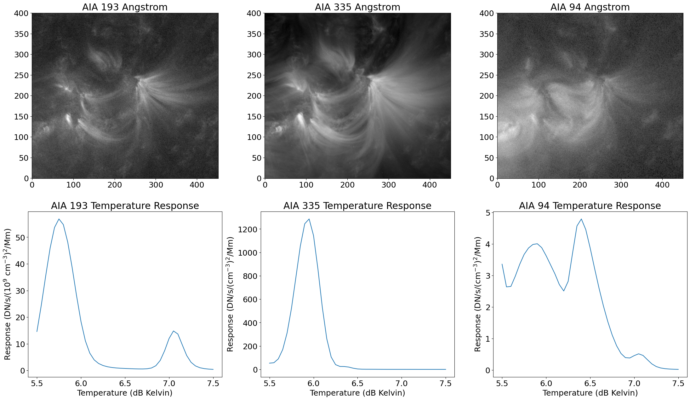
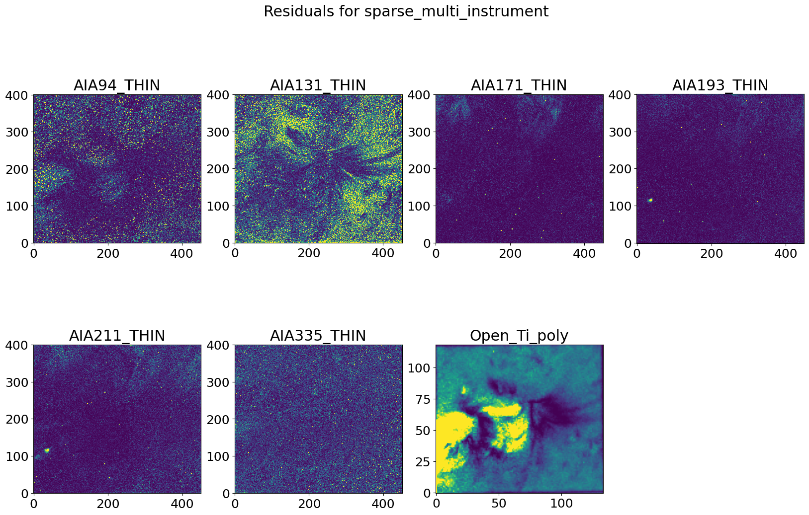

[1]:
from IPython.display import display, HTML
display(HTML("<style>:root { --jp-notebook-max-width: 100% !important; }</style>"))
import importlib, numpy as np
from sys import path
import time, os, copy
from sunpy.map import Map
from sunpy.net import Fido, vso, attrs as a
from sunpy.time import TimeRange
from ndcube import NDCube, NDCubeSequence, NDCollection
from astropy import wcs
import astropy.units as u
import matplotlib.pyplot as plt
plt.rcParams.update({'font.size': 18}) # Make the fonts in figures big enough for papers
plt.rcParams.update({'figure.figsize':[27,15]})
plt.rcParams.update({'image.origin':'lower'})
np.set_printoptions(linewidth=128)
base_path = os.getcwd()
import EMToolKit.EMToolKit as emtk
from EMToolKit.visualization.dashboard import dashboard_figure
from EMToolKit.instruments.aia import load_from_paths, aia_wrapper
from EMToolKit.instruments.xrt import xrt_wrapper
from EMToolKit.algorithms.sparse_em_wrapper import sparse_em_wrapper
from EMToolKit.algorithms.simple_reg_dem_wrapper import simple_reg_dem_wrapper
from EMToolKit.algorithms.sparse_nlmap_dem_wrapper import sparse_nlmap_dem_wrapper
/home/jplowman/research/solar_physics/projects/EMToolKit/EMToolKit/schemas/util.py:37: NumbaDeprecationWarning: The 'nopython' keyword argument was not supplied to the 'numba.jit' decorator. The implicit default value for this argument is currently False, but it will be changed to True in Numba 0.59.0. See https://numba.readthedocs.io/en/stable/reference/deprecation.html#deprecation-of-object-mode-fall-back-behaviour-when-using-jit for details.
@numba.jit(fastmath=True, parallel=True)
[2]:
import EMToolKit
import EMToolKit.visualization
importlib.reload(EMToolKit)
importlib.reload(EMToolKit.visualization)
importlib.reload(EMToolKit.visualization.dashboard)
import EMToolKit.EMToolKit as emtk
from EMToolKit.visualization.dashboard import dashboard_figure
em_collection=0
[3]:
daystr = '20100725'
date='2010/07/25 17:58:44'
data_path = os.path.join(base_path,'data',daystr)
xl, yl, dx, dy = 240*u.arcsec, -525*u.arcsec, 270*u.arcsec, 240*u.arcsec
#xl, yl, dx, dy = 240*u.arcsec, -525*u.arcsec, 135*u.arcsec, 120*u.arcsec
# Commands for initial data download. Comment out once that's successful.
# VSO can sometimes be a bit flakey here, in my experience, may require multiple tries:
#paths = []
#passbands = np.array([94,131,171,193,211,335])*u.angstrom
#for band in passbands:
# qry = Fido.search(a.Time(TimeRange(date,12*u.s)),a.Instrument('AIA'),a.Wavelength(band))[0,0]
# paths.append(Fido.fetch(qry,path=data_path))
aia94dat_path = os.path.join(data_path,'aia_lev1_94a_2010_07_25t17_58_44_13z_image_lev1.fits')
aia131dat_path = os.path.join(data_path,'aia_lev1_131a_2010_07_25t17_58_45_62z_image_lev1.fits')
aia171dat_path = os.path.join(data_path,'aia_lev1_171a_2010_07_25t17_58_36_34z_image_lev1.fits')
aia193dat_path = os.path.join(data_path,'aia_lev1_193a_2010_07_25t17_58_43_84z_image_lev1.fits')
aia211dat_path = os.path.join(data_path,'aia_lev1_211a_2010_07_25t17_58_36_62z_image_lev1.fits')
aia335dat_path = os.path.join(data_path,'aia_lev1_335a_2010_07_25t17_58_39_63z_image_lev1.fits')
# Hinode data was downloaded directly rather than using Fido since I had trouble getting it the latter way:
hinode_path = os.path.join(data_path,'XRT20100725_175844.2.fits')
paths = [aia94dat_path, aia131dat_path, aia171dat_path, aia193dat_path, aia211dat_path, aia335dat_path, hinode_path]
channel_names = np.array(['AIA94_THIN', 'AIA131_THIN', 'AIA171_THIN', 'AIA193_THIN', 'AIA211_THIN', 'AIA335_THIN', 'XRT'])
[4]:
aiamaps = load_from_paths(paths[0:6],xl=xl,yl=yl,dx=dx,dy=dy)
# We're loading these separately so that we can apply an offset to the XRT data -- there appears
# to be a significant misalignment based on manual inspection and testing:
#xrt_offsets = [-2*u.arcsec, -11*u.arcsec]
#xrt_offsets = [-7*u.arcsec, -23*u.arcsec]
xrt_offsets = [-5*u.arcsec, -20*u.arcsec]
xrtmap = load_from_paths([[paths[0]],hinode_path],xl=xl+xrt_offsets[0],yl=yl+xrt_offsets[1],dx=dx,dy=dy)[1]
xrtmap.meta['crval1'] -= xrt_offsets[0].value
xrtmap.meta['crval2'] -= xrt_offsets[1].value
[xrtmaps,xrterrs,xrt_trlogts,xrt_tresps] = xrt_wrapper([xrtmap])
[maps,errs,trlogts,tresps] = aia_wrapper(aiamaps)
maps.append(xrtmaps[0])
errs.append(xrterrs[0])
trlogts.append(xrt_trlogts[0])
tresps.append(xrt_tresps[0])
logt = np.linspace(5.5,7.5,41)
for i in range(0,len(tresps)):
tresps[i] = np.interp(logt,trlogts[i],tresps[i])
trlogts[i] = copy.deepcopy(logt)
# Normalizing the response functions makes them much easier for the solver to handle.
datmax_nominal = 1.0e4 # The nominal maximum of the data
overall_norm = datmax_nominal/np.max(np.array(tresps))
norms = np.max(np.array(tresps),axis=0)/np.max(np.array(tresps))/overall_norm
INFO: Missing metadata for solar radius: assuming the standard radius of the photosphere. [sunpy.map.mapbase]
WARNING: SunpyMetadataWarning: Missing metadata for observer: assuming Earth-based observer.
For frame 'heliographic_stonyhurst' the following metadata is missing: hgln_obs,hglt_obs,dsun_obs
For frame 'heliographic_carrington' the following metadata is missing: crlt_obs,crln_obs,dsun_obs
For frame 'heliographic_stonyhurst' the following metadata is missing: solar_b0,dsun_obs
[sunpy.map.mapbase]
[5]:
# Make data sequence from AIA data:
datasequence = emtk.em_data(maps,errs,trlogts,tresps)
# Create em_collection with AIA data:
em_collection = emtk.em_collection(datasequence)
INFO: Missing metadata for solar radius: assuming the standard radius of the photosphere. [sunpy.map.mapbase]
WARNING: SunpyMetadataWarning: Missing metadata for observer: assuming Earth-based observer.
For frame 'heliographic_stonyhurst' the following metadata is missing: hgln_obs,hglt_obs,dsun_obs
For frame 'heliographic_carrington' the following metadata is missing: crlt_obs,crln_obs,dsun_obs
For frame 'heliographic_stonyhurst' the following metadata is missing: solar_b0,dsun_obs
[sunpy.map.mapbase]
[6]:
# Show some of the AIA channels and their temperature responses for illustration:
plt_emmax = 5.0e28
gfac = 1.0/2.2
fig, axs = plt.subplots(2, 3)
axs[0,0].imshow(np.clip(maps[1].data/np.max(tresps[1]),0,plt_emmax)**gfac,cmap=plt.get_cmap('gray'))
axs[0,0].set(title='AIA 193 Angstrom')
axs[1,0].plot(trlogts[1],tresps[1]/1.0e-27)
axs[1,0].set(title='AIA 193 Temperature Response',xlabel='Temperature (dB Kelvin)',ylabel='Response (DN/s/(10$^9$ cm$^{-3})^2$/Mm)')
axs[0,1].imshow(np.clip(maps[2].data/np.max(tresps[2]),0,plt_emmax)**gfac,cmap=plt.get_cmap('gray'))
axs[0,1].set(title='AIA 335 Angstrom')
axs[1,1].plot(trlogts[2],tresps[2]/1.0e-27)
axs[1,1].set(title='AIA 335 Temperature Response',xlabel='Temperature (dB Kelvin)',ylabel='Response (DN/s/(cm$^{-3})^2$/Mm)')
axs[0,2].imshow(np.clip(maps[5].data/np.max(tresps[5]),0,plt_emmax)**gfac,cmap=plt.get_cmap('gray'))
axs[0,2].set(title='AIA 94 Angstrom')
axs[1,2].plot(trlogts[5],tresps[5]/1.0e-27)
axs[1,2].set(title='AIA 94 Temperature Response',xlabel='Temperature (dB Kelvin)',ylabel='Response (DN/s/(cm$^{-3})^2$/Mm)')
[6]:
[Text(0.5, 1.0, 'AIA 94 Temperature Response'),
Text(0.5, 0, 'Temperature (dB Kelvin)'),
Text(0, 0.5, 'Response (DN/s/(cm$^{-3})^2$/Mm)')]

[7]:
multi_coeffs, multi_logts, multi_bases, multi_coords, multi_algorithm, multi_em_wrapper = sparse_nlmap_dem_wrapper(datasequence, wrapargs={'norms':norms, 'overall_norm':overall_norm})
INFO: Missing metadata for solar radius: assuming the standard radius of the photosphere. [sunpy.map.mapbase]
WARNING: SunpyMetadataWarning: Missing metadata for observer: assuming Earth-based observer.
For frame 'heliographic_stonyhurst' the following metadata is missing: hgln_obs,hglt_obs,dsun_obs
For frame 'heliographic_carrington' the following metadata is missing: crlt_obs,crln_obs,dsun_obs
[sunpy.map.mapbase]
4.999250215886115 % done after 3.110848903656006 seconds
9.999017524264564 % done after 6.480065822601318 seconds
14.998784832643015 % done after 9.653247594833374 seconds
19.998552141021463 % done after 13.153360843658447 seconds
24.998319449399915 % done after 16.924364805221558 seconds
29.998086757778363 % done after 20.763426065444946 seconds
34.99785406615681 % done after 25.038889169692993 seconds
39.997621374535264 % done after 28.81321120262146 seconds
44.997388682913716 % done after 32.9749596118927 seconds
49.99715599129216 % done after 36.952210903167725 seconds
54.99692329967061 % done after 40.60025453567505 seconds
59.996690608049065 % done after 44.56484603881836 seconds
64.99645791642752 % done after 48.55983114242554 seconds
69.99622522480595 % done after 52.280149936676025 seconds
74.9959925331844 % done after 56.31605935096741 seconds
79.99575984156286 % done after 60.15965175628662 seconds
84.99552714994131 % done after 65.0708065032959 seconds
89.99529445831976 % done after 69.23694920539856 seconds
94.99506176669821 % done after 73.81574368476868 seconds
99.99482907507667 % done after 77.96471452713013 seconds
4.999250215886115 % done after 3.954819917678833 seconds
9.999017524264564 % done after 8.030447006225586 seconds
14.998784832643015 % done after 11.843273162841797 seconds
19.998552141021463 % done after 15.828091621398926 seconds
24.998319449399915 % done after 19.783579349517822 seconds
29.998086757778363 % done after 24.0409836769104 seconds
34.99785406615681 % done after 28.567872762680054 seconds
39.997621374535264 % done after 33.02411890029907 seconds
44.997388682913716 % done after 37.179752349853516 seconds
49.99715599129216 % done after 41.08158826828003 seconds
54.99692329967061 % done after 44.63177299499512 seconds
59.996690608049065 % done after 48.61902737617493 seconds
64.99645791642752 % done after 52.64832615852356 seconds
69.99622522480595 % done after 57.39676642417908 seconds
74.9959925331844 % done after 63.24455904960632 seconds
79.99575984156286 % done after 69.62983727455139 seconds
84.99552714994131 % done after 74.18715476989746 seconds
89.99529445831976 % done after 78.93065071105957 seconds
94.99506176669821 % done after 83.20911717414856 seconds
99.99482907507667 % done after 87.5703444480896 seconds
4.999250215886115 % done after 4.4067018032073975 seconds
9.999017524264564 % done after 8.991491794586182 seconds
14.998784832643015 % done after 13.742652654647827 seconds
19.998552141021463 % done after 18.292463302612305 seconds
24.998319449399915 % done after 22.498626947402954 seconds
29.998086757778363 % done after 26.923829555511475 seconds
34.99785406615681 % done after 31.3502836227417 seconds
39.997621374535264 % done after 35.51889228820801 seconds
44.997388682913716 % done after 40.177979707717896 seconds
49.99715599129216 % done after 45.0867063999176 seconds
54.99692329967061 % done after 49.53115439414978 seconds
59.996690608049065 % done after 55.00101351737976 seconds
64.99645791642752 % done after 60.86434769630432 seconds
69.99622522480595 % done after 67.24055314064026 seconds
74.9959925331844 % done after 74.32497787475586 seconds
79.99575984156286 % done after 80.79583358764648 seconds
84.99552714994131 % done after 86.33464884757996 seconds
89.99529445831976 % done after 90.8029272556305 seconds
94.99506176669821 % done after 95.16171550750732 seconds
99.99482907507667 % done after 99.21502995491028 seconds
4.999250215886115 % done after 3.773562431335449 seconds
9.999017524264564 % done after 7.7406439781188965 seconds
14.998784832643015 % done after 11.447117328643799 seconds
19.998552141021463 % done after 15.40975308418274 seconds
24.998319449399915 % done after 19.03388738632202 seconds
29.998086757778363 % done after 23.288485765457153 seconds
34.99785406615681 % done after 27.435535430908203 seconds
39.997621374535264 % done after 31.135797023773193 seconds
44.997388682913716 % done after 35.074958086013794 seconds
49.99715599129216 % done after 39.51917624473572 seconds
54.99692329967061 % done after 43.55309534072876 seconds
59.996690608049065 % done after 47.50706148147583 seconds
64.99645791642752 % done after 51.4269597530365 seconds
69.99622522480595 % done after 55.10201573371887 seconds
74.9959925331844 % done after 59.01391339302063 seconds
79.99575984156286 % done after 62.66536808013916 seconds
84.99552714994131 % done after 66.54948210716248 seconds
89.99529445831976 % done after 70.39764761924744 seconds
94.99506176669821 % done after 74.19239830970764 seconds
99.99482907507667 % done after 78.17370319366455 seconds
4.999250215886115 % done after 3.8088369369506836 seconds
9.999017524264564 % done after 7.844883441925049 seconds
14.998784832643015 % done after 11.459086418151855 seconds
19.998552141021463 % done after 15.333667755126953 seconds
24.998319449399915 % done after 19.48992419242859 seconds
29.998086757778363 % done after 23.647006273269653 seconds
34.99785406615681 % done after 27.99341106414795 seconds
39.997621374535264 % done after 31.90523624420166 seconds
44.997388682913716 % done after 36.12453007698059 seconds
49.99715599129216 % done after 40.38550329208374 seconds
54.99692329967061 % done after 44.19791889190674 seconds
59.996690608049065 % done after 48.3220055103302 seconds
64.99645791642752 % done after 52.455726623535156 seconds
69.99622522480595 % done after 56.22860050201416 seconds
74.9959925331844 % done after 60.12852120399475 seconds
79.99575984156286 % done after 63.74618887901306 seconds
84.99552714994131 % done after 67.78056144714355 seconds
89.99529445831976 % done after 71.76670098304749 seconds
94.99506176669821 % done after 75.5690667629242 seconds
99.99482907507667 % done after 79.42677974700928 seconds
4.999250215886115 % done after 3.6544504165649414 seconds
9.999017524264564 % done after 7.556798934936523 seconds
14.998784832643015 % done after 11.14007568359375 seconds
19.998552141021463 % done after 14.960201501846313 seconds
24.998319449399915 % done after 18.53769278526306 seconds
29.998086757778363 % done after 22.49564266204834 seconds
34.99785406615681 % done after 26.43397855758667 seconds
39.997621374535264 % done after 30.082422494888306 seconds
44.997388682913716 % done after 33.881152629852295 seconds
49.99715599129216 % done after 37.724414587020874 seconds
54.99692329967061 % done after 41.383166790008545 seconds
59.996690608049065 % done after 45.20920491218567 seconds
64.99645791642752 % done after 49.03186511993408 seconds
69.99622522480595 % done after 52.60315203666687 seconds
74.9959925331844 % done after 56.58128762245178 seconds
79.99575984156286 % done after 60.2288920879364 seconds
84.99552714994131 % done after 64.13597893714905 seconds
89.99529445831976 % done after 68.10341095924377 seconds
94.99506176669821 % done after 71.83333468437195 seconds
99.99482907507667 % done after 75.95488953590393 seconds
4.999250215886115 % done after 3.7605910301208496 seconds
9.999017524264564 % done after 7.745980739593506 seconds
14.998784832643015 % done after 11.595702886581421 seconds
19.998552141021463 % done after 15.614461183547974 seconds
24.998319449399915 % done after 19.65095829963684 seconds
29.998086757778363 % done after 23.226273775100708 seconds
34.99785406615681 % done after 27.174665451049805 seconds
39.997621374535264 % done after 31.08003520965576 seconds
44.997388682913716 % done after 34.66356563568115 seconds
49.99715599129216 % done after 38.53293323516846 seconds
54.99692329967061 % done after 42.180877923965454 seconds
59.996690608049065 % done after 46.11000895500183 seconds
64.99645791642752 % done after 50.50112223625183 seconds
69.99622522480595 % done after 54.27536606788635 seconds
74.9959925331844 % done after 58.33747720718384 seconds
79.99575984156286 % done after 62.56215190887451 seconds
84.99552714994131 % done after 66.33448553085327 seconds
89.99529445831976 % done after 70.26439046859741 seconds
94.99506176669821 % done after 74.15322613716125 seconds
99.99482907507667 % done after 77.76899361610413 seconds
68773.55 1071.819 0.0 2.8913682
Overall regularization factor: 1.0
63.31 s i = 0 chi2 = 95.32 step size = 0.3 reg. param. = 0.11 chi2 change = 92.42566 reg. change = -0.10921
Setup: 0.5654871463775635 Solver: 59.331443548202515 Stepper: 3.413912057876587
New combined FOM: 95.42702596350448 Old combined FOM: 187.7434725870973 Change: 92.31644662359282
230.58 s i = 1 chi2 = 20.85 step size = 0.85 reg. param. = 0.42 chi2 change = 74.46903 reg. change = -0.31577
Setup: 1.1865673065185547 Solver: 223.40030813217163 Stepper: 5.99060320854187
New combined FOM: 21.273768281015748 Old combined FOM: 95.42702596350448 Change: 74.15325768248873
434.42 s i = 2 chi2 = 4.07 step size = 0.85 reg. param. = 0.64 chi2 change = 16.77595 reg. change = -0.21177
Setup: 1.5448462963104248 Solver: 423.64679527282715 Stepper: 9.227931261062622
New combined FOM: 4.709590903425218 Old combined FOM: 21.273768281015748 Change: 16.564177377590532
597.65 s i = 3 chi2 = 1.11 step size = 0.85 reg. param. = 0.69 chi2 change = 2.96758 reg. change = -0.05535
Setup: 2.168287515640259 Solver: 583.1541709899902 Stepper: 12.32373857498169
New combined FOM: 1.7973591651917677 Old combined FOM: 4.709590903425218 Change: 2.9122317382334497
639.87 s i = 4 chi2 = 0.88 step size = 0.85 reg. param. = 0.68 chi2 change = 0.22662 reg. change = 0.01401
Setup: 2.5896167755126953 Solver: 620.4067232608795 Stepper: 16.87498188018799
New combined FOM: 1.5567279713778215 Old combined FOM: 1.7973591651917677 Change: 0.24063119381394626
[8]:
multi_em_demsequence = emtk.dem_model(multi_coeffs, multi_logts, multi_bases, multi_coords, multi_algorithm, multi_em_wrapper)
em_collection.add_model(multi_em_demsequence)
INFO: Missing metadata for solar radius: assuming the standard radius of the photosphere. [sunpy.map.mapbase]
WARNING: SunpyMetadataWarning: Missing metadata for observer: assuming Earth-based observer.
For frame 'heliographic_stonyhurst' the following metadata is missing: hgln_obs,hglt_obs,dsun_obs
For frame 'heliographic_carrington' the following metadata is missing: crlt_obs,crln_obs,dsun_obs
[sunpy.map.mapbase]
[9]:
multi_synthmaps = [em_collection.synthesize_map(map) for map in em_collection.data()]
multi_synthdata = [map for map in multi_synthmaps]
[10]:
def calc_resids(synthdata, em_collection):# Calculate the residuals and Chi squared:
ndata = len(synthdata)
resids = []
datasequence = em_collection.data()
chi2 = 0
[nx,ny] = datasequence[0].data.shape
for seq in datasequence: [nx,ny] = [np.min([seq.data.shape[0],nx]),np.min([seq.data.shape[1],ny])]
for i in range(0,ndata):
resids.append(((synthdata[i].data-datasequence[i].data)/datasequence[i].uncertainty.array)**2)
chi2 += np.mean(resids[i])/ndata
return resids, chi2
#spars_resids, spars_chi2 = calc_resids(spars_synthdata,em_collection)
#simpl_resids, simpl_chi2 = calc_resids(simpl_synthdata,em_collection)
multi_resids, multi_chi2 = calc_resids(multi_synthdata,em_collection)
print("Multi-instrument Chi squared = ",multi_chi2)
#print('simple_reg_dem Chi squared = ',simpl_chi2, 'spars_em Chi squared = ',spars_chi2)
Multi-instrument Chi squared = 1.0187591209873754
[11]:
# Plot Residuals:
fig = plt.figure(figsize=[20,12])
plt.suptitle('Residuals for '+multi_algorithm)
for i in range(0,7):
ax1 = fig.add_subplot(2,4,i+1)
ax1.imshow(multi_resids[i],vmin=0,vmax=5)
ax1.set(title=em_collection.data()[i].meta['channel'])

[12]:
from __future__ import print_function
from ipywidgets import interact, interactive, fixed, interact_manual
import ipywidgets as widgets
class dashboard_object(object):
def __init__(self,em_collection):
self.emc = em_collection
def widgwrap(self, xpt, ypt, rtemp, gtemp, btemp, sigma, algorithm):
dashboard_figure(self.emc, plotpoint=[xpt,ypt], temperatures=[rtemp,gtemp,btemp], sigmas=sigma, algorithm=algorithm)
[13]:
importlib.reload(EMToolKit.visualization.dashboard)
from EMToolKit.visualization.dashboard import dashboard_figure
dash = dashboard_object(em_collection)
[14]:
[nx,ny] = dash.emc.collection[dash.emc.collection['models'][0]][0].data.shape
xpt=widgets.IntSlider(min=0, max=nx, value=10, step=1, description='xpt', continuous_update=False)
ypt=widgets.IntSlider(min=0, max=ny, value=100, step=1, description='ypt', continuous_update=False)
rtemp=widgets.FloatSlider(min=5, max=7, value=5.8, step=0.05, description='rtemp', continuous_update=False)
gtemp=widgets.FloatSlider(min=5, max=7, value=6.1, step=0.05, description='gtemp', continuous_update=False)
btemp=widgets.FloatSlider(min=5, max=7, value=6.4, step=0.05, description='btemp', continuous_update=False)
sigma=widgets.FloatSlider(min=0.025, max=0.5, value=0.125, step=0.01, description='sigma', continuous_update=False)
algorithm=widgets.Dropdown(options=dash.emc.collection['models'], description='algorithm', continuous_update=False)
ui = widgets.HBox([xpt,ypt,rtemp,gtemp,btemp,sigma,algorithm])
out = widgets.interactive_output(dash.widgwrap, {'xpt':xpt,'ypt':ypt,'rtemp':rtemp,'gtemp':gtemp,'btemp':btemp,'sigma':sigma,'algorithm':algorithm})
display(ui,out)
[ ]: